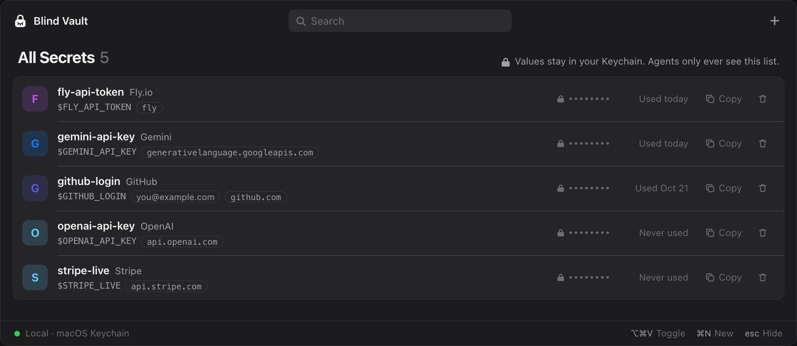
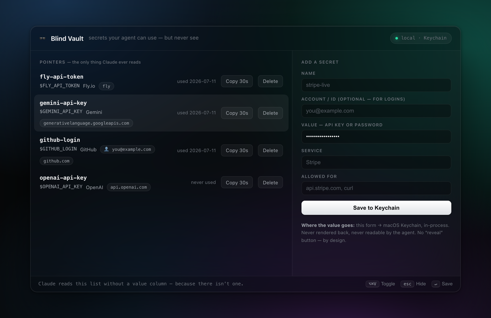

Abstract
Claude Code로 작업할 때마다 “API 키는 .env 파일에 직접 넣어주세요”라는 말을 들었다. 이 작은 불편에서 출발해 문제를 정의하고, 설계를 뒤집고, 하루 만에 만들어 실제 키로 검증한 뒤 오픈소스로 공개하기까지의 과정을 담았다.
결과물 blind-vault는 비밀 값을 macOS Keychain(암호화 DB)에 두고, AI 에이전트에게는 값 없는 이름표(포인터)만 건넨다. AI는 키를 한 번도 보지 않고 API 호출·배포·로그인을 끝낸다.
Background문제 발견
Method설계 뒤집기
Implementation하루 만에 구현
Results실제 키로 검증
Conclusion공개 · 공유
Background
> 이 앱 Fly에 배포해줘
⏺
배포하려면 FLY_API_TOKEN이 필요해요. 보안상 제가 키를
직접 받을 수는 없어서, API 키는 .env 파일에 직접 넣어주세요.
직접 받을 수는 없어서, API 키는 .env 파일에 직접 넣어주세요.
⎿ FLY_API_TOKEN=여기에_토큰_붙여넣기
처음엔 사소한 불편이었다. 그런데 프로젝트마다 반복되자 질문이 생겼다. “AI가 키를 못 보는 건 그대로 두고, 손은 AI가 움직이게 할 수 없을까?”
기존 .env 방식은 키가 평문 파일과 대화 기록에 남고, 키가 바뀔 때마다 복사·붙여넣기가 반복된다(그림 1 왼쪽).
Method
첫 아이디어는 “키를 암호화해 두고, 필요할 때 AI가 풀게 하자”였다. 하지만 푸는 순간 값은 AI의 화면에 찍히고 기록에 남는다. 그래서 설계를 뒤집었다. AI의 화면에는 이름표만 오가고, 값은 화면 아래에서만 흐르게 한다.
✕ 기존 .env 방식AI가 보는 터미널 화면
$ cat .env
GEMINI_API_KEY=AIzaSyD8xQ…← 키가 화면에 찍힘
$ curl -H "x-goog-api-key: AIzaSyD8xQ…" https://…
AI에게 화면에 찍힌 글자 = 입력이다. 키가 그대로 대화 기록에 남는다.
✓ blind-vaultAI가 보는 터미널 화면
$ vault ls
gemini-api-key $GEMINI_API_KEY googleapis.com← 이름표뿐
$ vault use gemini-api-key -- curl https://…← 이름만
{"text": "Claude just called me, blindly…"}← 결과만
화면에 오가는 건 이름표 · 명령 · 결과뿐. 키는 한 번도 화면에 오르지 않는다.
명령 한 줄 ↓
화면 경계 — 여기부터는 AI가 볼 수 없다 ·
vault use 한 줄이 실제로 하는 일
↑ 가려진 결과 글자만
1이름표 찾기
$GEMINI_API_KEY
값 칸은 없다
manifest.jsongemini-api-key → $GEMINI_API_KEY
값 칸은 없다
2사용처 검사
실행 자체를 안 함
googleapis.com ∈ 명령?아니면 SCOPE BLOCK실행 자체를 안 함
3금고 열기
화면엔 출력하지 않음
security find-generic-password -wKeychain → vault 메모리화면엔 출력하지 않음
4쪽지 건네기
환경변수로 전달
GEMINI_API_KEY=•••• curl …curl 프로세스에게만환경변수로 전달
5API 호출
HTTPS로만 나감
curl → https → Google키는 암호화된HTTPS로만 나감
6출력 가림
[REDACTED]
stdout | redact키와 같은 글자 →[REDACTED]
비밀 값이 존재하는 유일한 구간 — AI 화면 밖 · 1초 미만 · 끝나면 사라짐
그림 1. 터미널 한 줄 뒤에서 일어나는 일. AI가 아는 세상은 터미널 화면, 즉 자기가 친 글자와 돌아온 글자뿐이다. 기존 방식은 키가 그 화면에 찍힌다. blind-vault에선 키가 화면 아래 ③~⑤ 구간에서만 잠깐 존재하고 사라진다.
Principle
포인터는 값이 아니라 값이 ‘어디 있는지’를 가리킨다. 가리키기만 해서는 내용을 볼 수 없고, 그 위치를 따라갈(역참조) 수 있어야 값이 나온다. blind-vault의 이름표도 같다. AI는 이름표를 쥐고 있지만, 그 위치를 따라가 값을 꺼내는 일은 운영체제가 vault와 실행 프로그램에게만 허락한다.
AI 에이전트의 메모리
0x7ff7…1a20"vault use gemini-api-key …"
0x7ff7…1a40키 없음 — 다른 데이터
0x7ff7…1a60"gemini-api-key" 이름표
✕
프로세스
격리
격리
vault · curl의 메모리
0x7ff7…1a20argv: curl https://…
0x7ff7…1a40"sk-9f3a…" 진짜 키
0x7ff7…1a60GEMINI_API_KEY=•••• 쪽지
Keychain (암호화 DB)디스크엔
9c 4f e1 07 … 같은 암호문으로만 저장운영체제가 잠금을 풀어
vault에게만 복호화해 건넨다 →
vault에게만 복호화해 건넨다 →
그림 2. 같은 주소, 다른 세상. 프로세스마다 메모리 지도가 따로 있다. 같은 주소가 vault 쪽에선 키를, AI 쪽에선 전혀 다른 것을 가리킨다. 그래서 AI는 이름표로 일을 시킬 수는 있어도 값까지 따라갈 수는 없다.
✓쓸 수 있다
- API 호출·배포
vault use - 웹 로그인 입력
vault type - 어떤 키가 있는지 보고 골라 쓰기
✕막는다
- 값을 대화·화면·파일로 보기
- 허용 안 된 주소로 보내기
- 실수로 출력된 값 →
[REDACTED] - 엉뚱한 창에 입력하기
!못 막는다
- AI가 금고 조회 명령을 일부러 직접 실행 → 규칙과 사용자 승인으로만 막음
- 키를 받은 프로그램 자체가 악성인 경우
표 1. 쓸 수 있는 범위와 보호의 경계.
의의. 이 방식은 AI를 ‘믿고 맡기는’ 대신 권한을 구조로 나눈다. 일을 하는 권한(이름표)과 비밀을 아는 권한(값)을 떼어내, AI에게 꼭 필요한 권한만 준다(최소 권한 원칙[1]). 위임과 보안 중 하나를 포기하지 않아도 된다.
Implementation
작은 것부터 하루 동안 키웠다. 원리를 먼저 증명하고, 사람이 쓰기 편한 형태로 옮기고, 마지막에 AI가 스스로 쓰도록 규칙을 붙였다.
v0.1Bash 명령어200줄로 원리 검증
v0.2웹 대시보드사람용 화면
v0.3메뉴바 앱“웹 말고 프로그램으로”
SkillClaude Code 규칙AI가 스스로 쓰도록

1 2 31이름표 목록. AI가 볼 수 있는 건 여기까지다.
2값은 가려진 채 Keychain 밖으로 나오지 않는다.
3⌥⌘V로 어디서든 열고, 폼에서 키를 바로 금고에 넣는다.
그림 3. blind-vault 메뉴바 앱 (Rust · Tauri). 사람은 앱으로 키를 관리하고, AI는 같은 목록을 명령어로 쓴다.
만들다 보니 버그도 나왔다. sh로만 쓰도록 허용한 키가 should라는 단어에도 통과됐다. 글자가 포함됐는지만 보던 판정을 단어 경계 기준으로 다시 설계해, example.com.evil.io 같은 위장 주소까지 막게 됐다.
Results
| 실험 | 확인한 것 | 결과 |
|---|---|---|
| 사용처 판정 | 서브도메인 허용, example.com.evil.io 같은 위장 주소 차단 등 6가지 경우 | 6 / 6 |
| 출력 가림 | 프로그램이 키를 일반 출력·오류 출력으로 내보낼 때 | 둘 다 가림 |
| 실제 API 호출 | AI가 키를 보지 않고 Gemini API 호출 | 응답 수신 |
| 로그인 입력 | GitHub 로그인 폼에 아이디·비밀번호 자동 입력 | 입력 완료 |
| 엉뚱한 창 보호 | 채팅 창이 앞에 있을 때 입력 시도 | 0자, 중단 |
표 2. 기능 검증. 모든 실험은 실제 macOS Keychain과 실제 키로 수행했다.
$ vault use gemini-api-key -- curl https://generativelanguage.googleapis.com/…
Gemini ▸ “Yejun, Claude just called me, blindly using my API key.
Congrats on that slick new blind-vault setup!” $ vault use test-key -- sh -c 'echo "leaked: $KEY"'
leaked: [REDACTED:test-key] $ vault type github-login --account --enter
vault: frontmost app is 'Claude', not a browser — aborted, nothing typed.
Gemini ▸ “Yejun, Claude just called me, blindly using my API key.
Congrats on that slick new blind-vault setup!” $ vault use test-key -- sh -c 'echo "leaked: $KEY"'
leaked: [REDACTED:test-key] $ vault type github-login --account --enter
vault: frontmost app is 'Claude', not a browser — aborted, nothing typed.
그림 4. 실제 실행 기록. Gemini의 실제 답장: “Claude가 방금 내 API 키를 눈 감고 써서 날 불렀네요.” 세 번째는 채팅 창에 비밀번호가 입력될 뻔한 상황을 도구가 스스로 막은 기록이다.
References
- J. H. Saltzer, M. D. Schroeder. The Protection of Information in Computer Systems. Proc. IEEE 63(9), 1975.
- OWASP. Top 10 for LLM Applications: Prompt Injection, Sensitive Information Disclosure. 2025.
- Apple Inc. Keychain Services. Apple Developer Documentation.
- Infisical. agent-vault. GitHub, 2026.
Conclusion
완성된 도구는 GitHub에 MIT 라이선스로 공개하고, 설치 스크립트·데모 영상·하루 동안의 제작 기록(STORY.md)을 함께 올렸다. 이어 ‘1일 1오픈소스’ 2일차로 LinkedIn에 공유했다.
만들며 배운 것도 있다. 같은 문제를 다룬 프로젝트(Infisical agent-vault[4] 등)가 이미 있었다. 그래도 내가 매일 겪은 불편에서 출발하니, 서버 없이 내 Mac 하나로 도는 가벼운 도구라는 다른 자리가 보였다. 다음 목표는 값을 넘기지 않고 사용 권한만 다른 사람·에이전트와 나누는 것이다.
Yejun AhnFounder @ warmboot · AI Researcher
LinkedIn<방학동안 1일 1오픈소스 만들기 프로젝트>
2일차: env파일에 API키를 붙여넣지 마세요!!
오늘의 오픈소스는 Blind Vault입니다. 다들 claude code 쓰다가 “API 키는 .env에 직접 넣어주세요”라는 말 들어보셨나요?
claude는 정책상 API 키나 비밀번호 유출에 굉장히 민감하게 반응해서, 직접 시크릿을 줄 수 없게 되어 있습니다. … 더보기
2일차: env파일에 API키를 붙여넣지 마세요!!
오늘의 오픈소스는 Blind Vault입니다. 다들 claude code 쓰다가 “API 키는 .env에 직접 넣어주세요”라는 말 들어보셨나요?
claude는 정책상 API 키나 비밀번호 유출에 굉장히 민감하게 반응해서, 직접 시크릿을 줄 수 없게 되어 있습니다. … 더보기

13
노출 796
github.com/AnYejun/blind-vault
그림 5. LinkedIn 공유 게시물. 아이디어에서 시작한 도구가 공개된 뒤 처음 받은 반응.